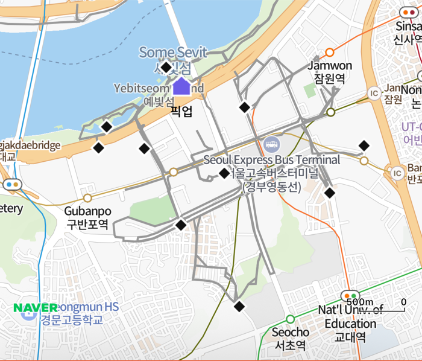
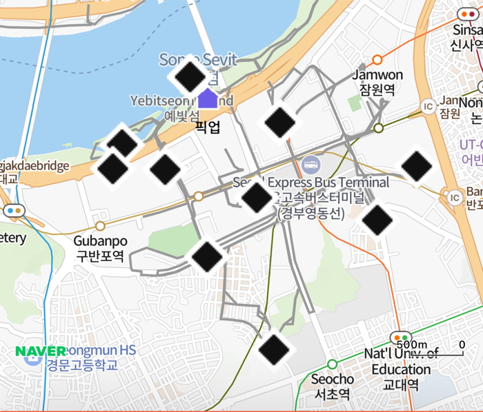
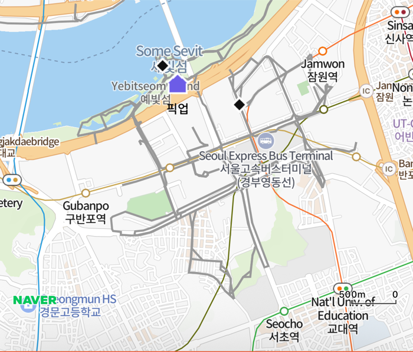

Sean asked to see both before choosing. Both frames are the real simulator at the same camera (Banpo, 500 m scale, 54 courses on the map). A is the app as it ships today. B makes the anchor 44 × 44 pt — visible and tappable — which is the HIG floor the rest of the app honours. Nothing else changed between the two shots.
Glyph 18 × 18 pt, tap area 18 × 18 pt (the Naver SDK has no hit-slop; the tap box is the icon box). Dense clusters stay readable; the target is 17 % of the HIG floor's area.

Glyph 44 × 44 pt, tap area 44 × 44 pt. Every anchor meets the floor; at this zoom the Banpo cluster overlaps — anchors stack on 잠수교/세빛섬. Zooming in separates them.

"Keep 18 pt visible, grow only the invisible tap area to 44 pt" sounds like the free lunch. It is not available: @mj-studio/react-native-naver-map markers have no hit-slop prop, so the only route is the SDK's custom-React-View marker (transparent 44 pt box with an 18 pt image inside). Measured on the simulator: most markers do not render through that path on iOS (2 of ~10 drawn, the rest missing). That is the frame below — evidence, not a proposal.
Same camera. Only two anchors survive the custom-view path; the rest never draw. Not shippable.

| Pick | Ships | Trade |
|---|---|---|
| A — 18 pt | Nothing changes. Remove the dev knob. | Targets stay under the floor on the one screen where the user is hunting for a small thing on a map; other screens honour 44 pt. |
| B — 44 pt | ANCHOR_BASE = 44 in course-map.tsx; selected stays +8. Remove the knob. | Clusters overlap until the user zooms; the map reads heavier. Could pair with a lighter glyph (outline diamond) at 44 — a second lab if you want it. |
| A′ — 18 pt now, size by zoom later | Same as A today; a follow-up scales the glyph with the camera zoom (small when dense, 44 when the cluster spreads). | More code on a screen that already carries a lazy native map; not a lunchtime change. |
?anchor= param keeps the camera, so A/B/C are the same frame. Full-screen originals are in the session scratchpad (anchors/anchor-{18,44,44h}-banpo.png) and the knob lives at app/app/owner/course-map.tsx (dev-only; default path unchanged).